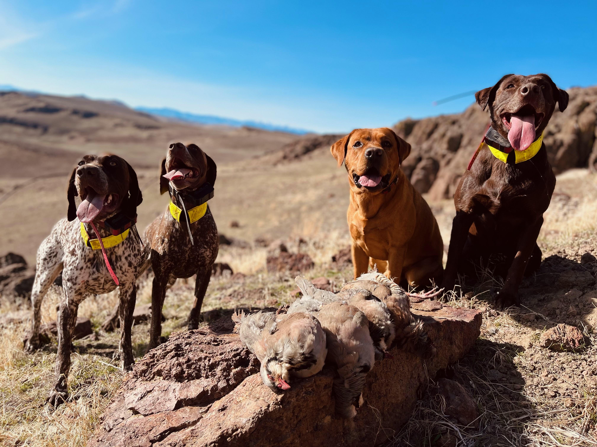

<div class="container-fluid text-center">
  <div class="row">
    <h1 class="display-4 fw-bold">Burnt Creek Bird Dogs</h1>
    <div class="col-lg-6 mx-auto">
      
      <div>
        <p class="lead text-start">
          Burnt Creek Bird Dogs is a small, family run business that focuses on 
          personalized dog training to fit each client’s needs. We specialize in 
          working breed obedience and gun dog training.
        </p>
        <p class="lead text-start">
          Located in beautiful northern Reno, our training is based from our property
          which has 120 acres of wild chukar country.
        </p>
        <p class="lead text-start">
          We offer board and train programs, private lessons, and open facility time.
          Since we are a small kennel we only take a certain amount of dogs in at a time
          for both board and train and for lessons. This means we spend more time 
          1 on 1 time with each dog to make sure they are getting the most out of their training.
        </p>
        <p class="lead text-start">
          All training options include one free 1 hour consultation with
          you and your pup where we evaluate your dog and where they are at
          to create a unique training program for each dogs needs.
        </p>
        <p class="lead text-start">
          Our training season is March – August as we are big hunters ourselves and 
          like to take our personal dogs out every weekend during hunting season. With
          that being said, we do still offer private lessons during the week September - 
          February as time (and sunlight) allows.
        </p>
        <p class="lead text-start">
          We offer boarding year-round if you ever need a place to send your pup while 
          you go on vacation. If you have previously trained with us, we offer complimentary
          tune up sessions for your pup while they are boarded with us. Each boarding dog
          will get 1-2 group free runs up our 2 mile long hill per day, as well as plenty of
          lounge time in their own 5x10 indoor/ outdoor kennel.
        </p>
        <p class="lead text-start">
          Give us a call today to get your dog started on their journey to become the best 
          hunting partner/ companion they can be.
        </p>
      </div>
    </div>
  </div>
</div>
